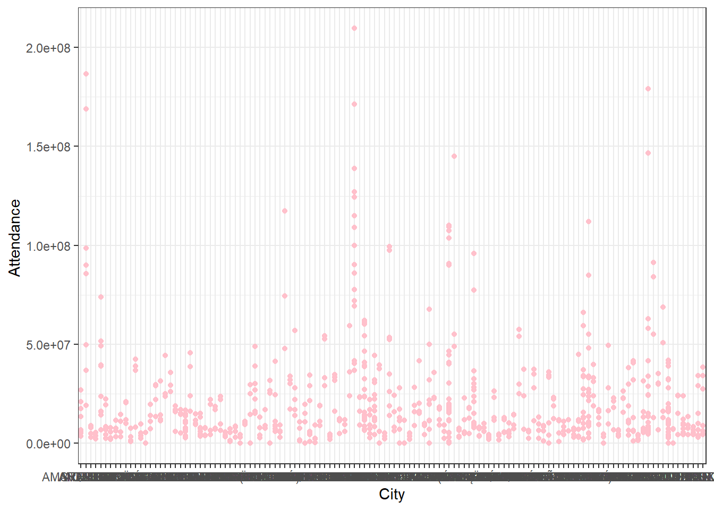
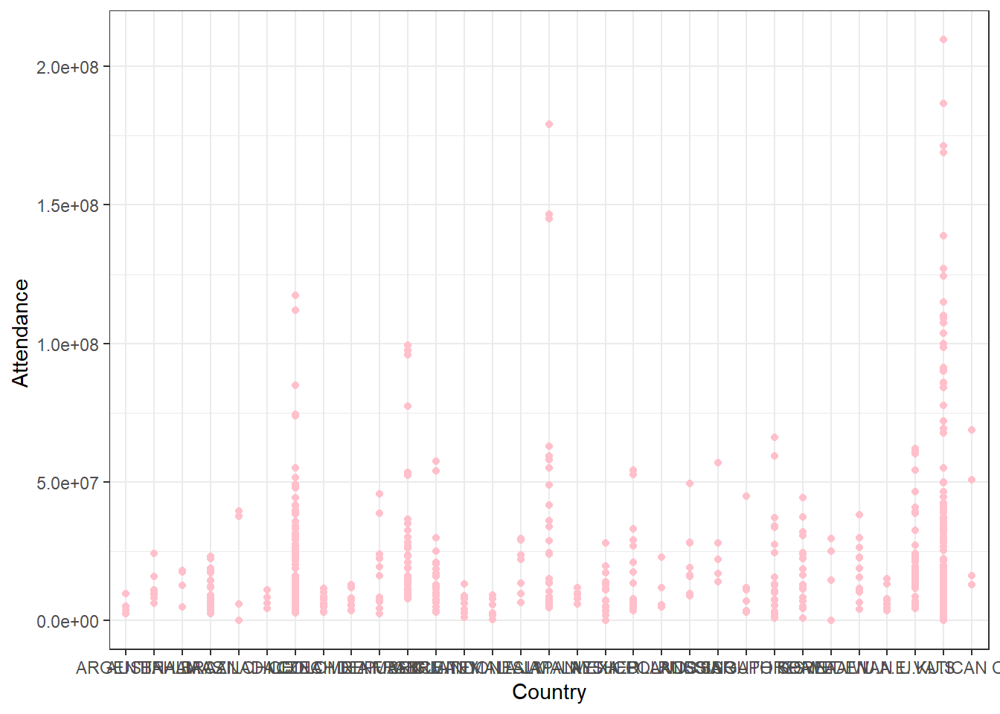

Regression
Peng Su, Jixin Li
Linear Regression
Linear regression is used to model the relationship between attendance and five independent variables (city, country, year, type, and region). It assumes that this relationship is linear, meaning changes in the predictors are associated with a constant change in the response. We first fit linear regression of each predictors to check if they are associated with attendance.
Relationship between city and attendance

a few cities are associated with attendance such as ANAHEIM, Beijing, UNIVERSAL CITY, TOKYO, VATICAN. In general, there is no apparent linear relationship between city and attendance.
Relationship between country and attendance

only one country Japan is significantly associated with attendance. In general, there is no apparent linear relationship between country and attendance.
Relationship between year and attendance
##
## Call:
## lm(formula = attendance ~ year, data = data_df)
##
## Residuals:
## Min 1Q Median 3Q Max
## -22189468 -14873528 -8200722 4982092 184429278
##
## Coefficients:
## Estimate Std. Error t value Pr(>|t|)
## (Intercept) 6104922321 1747418850 3.494 0.000505 ***
## year -3011254 864862 -3.482 0.000527 ***
## ---
## Signif. codes: 0 '***' 0.001 '**' 0.01 '*' 0.05 '.' 0.1 ' ' 1
##
## Residual standard error: 2.6e+07 on 738 degrees of freedom
## Multiple R-squared: 0.01616, Adjusted R-squared: 0.01483
## F-statistic: 12.12 on 1 and 738 DF, p-value: 0.0005274according to the summary of linear regression, \(\widehat{Y}=\widehat{\beta_0}+\widehat{\beta_1}*X\). Linear Model: \(\widehat{attendance}=6104922321-3011254*year\).
Year is significantly associated with attendance, and there is a linear relationship between year and attendance. Attendance has experienced a decline from 2019 to 2022.
Relationship between park type and attendance
Park type is significantly associated with attendance. Amusement/Theme Park has the highest attendance and water park has the lowest attendance.
Relationship between region and attendance
Latin America is significantly associated with attendance. Overall, there is no apparent linear relationship between region and attendance.
Fit a Multiple linear regression
Multiple linear regression allows us to account for the influence of multiple independent variables on the attendance simultaneously. The outcomes of the linear regression analysis suggest that the variable “year” exhibits a linear relationship with attendance. Additionally, specific categories within the “type” and “region” variables are found to be significantly associated with attendance. Thus, variables “year”, “type”, and “region” are used to fit a multiple linear regression.
##
## Call:
## lm(formula = attendance ~ year + type + region, data = data_df)
##
## Residuals:
## Min 1Q Median 3Q Max
## -45964074 -11813664 -4985390 6989976 161399771
##
## Coefficients:
## Estimate Std. Error t value Pr(>|t|)
## (Intercept) 4621928259 1470060108 3.144 0.00173 **
## year -2266156 727662 -3.114 0.00192 **
## typeMuseum -28938548 2387097 -12.123 < 2e-16 ***
## typeWater Park -31241190 1983579 -15.750 < 2e-16 ***
## regionEMEA -14707744 2635034 -5.582 3.36e-08 ***
## regionEurope Middle East Africa 9197198 3154499 2.916 0.00366 **
## regionLatin America -19240504 2955262 -6.511 1.39e-10 ***
## regionNorth America 1670022 2040565 0.818 0.41339
## ---
## Signif. codes: 0 '***' 0.001 '**' 0.01 '*' 0.05 '.' 0.1 ' ' 1
##
## Residual standard error: 21800000 on 732 degrees of freedom
## Multiple R-squared: 0.3141, Adjusted R-squared: 0.3075
## F-statistic: 47.88 on 7 and 732 DF, p-value: < 2.2e-16only North America within region is not significantly associated with attendance.
Stepwise regression
stepwise regression helps streamline the modeling process by automatically including or excluding variables based on statistical criteria. We use both backward and forward selection to find the best fit model.
## Start: AIC=25016.07
## attendance ~ year + type + region
##
## Df Sum of Sq RSS AIC
## <none> 3.4784e+17 25016
## - year 1 4.6088e+15 3.5245e+17 25024
## - region 4 4.0930e+16 3.8877e+17 25090
## - type 2 1.3329e+17 4.8113e+17 25252##
## Call:
## lm(formula = attendance ~ year + type + region, data = data_df)
##
## Coefficients:
## (Intercept) year
## 4621928259 -2266156
## typeMuseum typeWater Park
## -28938548 -31241190
## regionEMEA regionEurope Middle East Africa
## -14707744 9197198
## regionLatin America regionNorth America
## -19240504 1670022The best fit model with lowest AIC is \(\widehat{attendance}=\widehat{\beta_0}+\widehat{\beta_1}*year+\widehat{\beta_2}*type+\widehat{\beta_3}*region\).
Logistic Regression
Background
In order to further study the relationship between different stages of the COVID-19 pandemic and the visitor flow of the theme park, based on the development process of the pandemic, the years from 2019 to 2022 are divided into two pandemic levels
Outbreak period: 2019 to 2021
Control period: 2022
Then add to our data as pandemic_level.
Furthermore, to classify the pandemic period by park attendance and
other covariates, including Park Type and Region, we established a
logistic regression model with pandemic_level as the
dependent variable.
Data Preparation
#import the data and tidy
set.seed(12138)
park_df =
read_csv("ultimate data.csv") |>
janitor::clean_names() |>
drop_na()
logistic_df =
park_df |>
mutate(
type = as.factor(type),
region = as.factor(region),
country = as.factor(country),
pandemic_level = case_when(
year == 2019 ~ "outbreak",
year == 2020 ~ "outbreak",
year == 2021 ~ "outbreak",
year == 2022 ~ "control"
),
pandemic_level = as.factor(pandemic_level)
) #attendance relationship
logistic_df |>
ggplot(aes(park_name, log10(attendance), color = pandemic_level)) +
geom_point(alpha = .7) +
facet_grid(. ~ region ) +
labs(x = "Parks", y = "Attendance (log10)",
caption = "Fig.1 The relationship between park attendance and pandemic level across regions") +
theme(axis.text.x = element_blank() )
#split data into train and test subset
cv_results =
logistic_df |>
filter(region != "Worldwide") |>
mutate(
pandemic_level =
case_match(
pandemic_level,
"outbreak" ~ 1,
"control" ~ 0
)
)
cv_df =
crossv_mc(
cv_results,1
)
cv_df =
cv_df |>
mutate(
train = map(train, as_tibble),
test = map(test, as_tibble))After transforming attendance by log function, the relationship between the park attendance an the pandemic levels was displayed in Fig.1.
It can be noticed that different epidemic stages may have different visitor flow patterns, in other words, the traffic of theme parks from 2019 to 2022 can be classified according to the extent of the epidemic. This is particularly true in EMEA, the Middle East and Latin America.
Then the observations in region “Worldwide” were excluded as
redundant data and pandemic_level is converted to a
binomial distribution in order to fit logistic regression models and
predict epidemic levels more easily.
Logistic model
#fit model and selection
log_mod =
cv_df |>
select(train) |>
unnest(cols = c(train)) |>
glm(pandemic_level ~ attendance + type + region, family = "binomial", data = _)
step(log_mod, direction = "forward")
best_fit = log_mod#model summary
coef(best_fit) |>
knitr::kable(col.names = c("Variables" , "Coefficients"),
caption = "Table.1 The coefficients of model")| Variables | Coefficients |
|---|---|
| (Intercept) | 2.2365446 |
| attendance | 0.0000000 |
| typeMuseum | -0.8417669 |
| typeWater Park | -0.5368024 |
| regionEMEA | -0.7424560 |
| regionEurope Middle East Africa | -0.0950834 |
| regionLatin America | -0.8266498 |
| regionNorth America | -0.4789397 |
best_fit |>
broom::tidy() |>
knitr::kable(caption = "Table.2 Summary of the chose model" )| term | estimate | std.error | statistic | p.value |
|---|---|---|---|---|
| (Intercept) | 2.2365446 | 0.3397519 | 6.5828760 | 0.0000000 |
| attendance | 0.0000000 | 0.0000000 | -2.0617899 | 0.0392277 |
| typeMuseum | -0.8417669 | 0.3303785 | -2.5478863 | 0.0108378 |
| typeWater Park | -0.5368024 | 0.2900213 | -1.8509072 | 0.0641829 |
| regionEMEA | -0.7424560 | 0.3419614 | -2.1711691 | 0.0299184 |
| regionEurope Middle East Africa | -0.0950834 | 0.3875865 | -0.2453216 | 0.8062074 |
| regionLatin America | -0.8266498 | 0.3715557 | -2.2248340 | 0.0260924 |
| regionNorth America | -0.4789397 | 0.2575723 | -1.8594381 | 0.0629651 |
best_fit |>
broom::glance() |>
knitr::kable(caption = "Table.3 The AIC of the model")| null.deviance | df.null | logLik | AIC | BIC | deviance | df.residual | nobs |
|---|---|---|---|---|---|---|---|
| 637.5938 | 590 | -312.8703 | 641.7406 | 676.7951 | 625.7406 | 583 | 591 |
A full logistic regression model was fitted to our data with all
Concomitant variables that we were interested in, including
attendance, type, and region by
glm() function with binomial as family.
Then forward step-wise model selection was performed by
step() to selected the best fitted model with lowest AIC
value.
After step-wise selection, we chose the full model as the final
logistic regression model while attendance,
typeMuseum, regionEMEA and
regionLatin America showed significant association with the
pandemic_level. As showed in Table.1, the model statement
is
pandemic_level = 2.2365446 + (-8.5e-09)attendance + (-0.8417669)Museum + (-0.5368024)Water Park + (-0.7424560)EMEA + (-0.0950834)Europe Middle East Africa + (-0.8266498)Latin America +(-0.4789397)North America
Cross validation and ROC
#cross validation 5 fold
set.seed(1)
folds <- createFolds(y=pull(cv_results, pandemic_level),k=5)
#five fold ROC
auc_value<-as.numeric()
for(i in 1:5){
fold_test <- cv_results[folds[[i]],]
fold_train <- cv_results[-folds[[i]],]
fold_pre <- glm(pandemic_level ~ attendance + type + region, family = "binomial", data = fold_train )
fold_predict <- predict(fold_pre,type='response',newdata=fold_test)
auc_value<- append(auc_value,as.numeric(auc(as.numeric(pull(fold_test, pandemic_level)),fold_predict)))
}
#ROC for fold 1 as example
fold_test <- cv_results[folds[[1]],]
fold_train <- cv_results[-folds[[1]],]
fold_pre <- glm(pandemic_level ~ attendance + type + region, family = "binomial", data = fold_train )
fold_predict <- predict(fold_pre,type='response',newdata=fold_test)
roc1<-roc(pull(fold_test, pandemic_level),fold_predict)
plot(roc1, print.auc=T, auc.polygon=T, grid=c(0.1, 0.2),
grid.col=c("green", "red"), max.auc.polygon=T,
auc.polygon.col="skyblue",
print.thres=T)
mtext("Fig.3 The ROC curve for fold 1 of the model", side = 1, line = 4.1)After 5 fold cross validation, the model performance was indicated by a mean AUC value, which equals to 0.5564096, the ROC curve for fold 1 was displayed in Fig.3 as an example.
Disscusion
According to the results, the prediction ability of the model was not excellent with a low AUC value, which may cause by the small sample size. In addition, in the binary classification of dependent variables, the sample size gap between the two categories was large, and the model can be improved by under-sampling or over-sampling methods. Moreover, the prediction ability of the model can be improved by adding weight parameters when establishing the model.